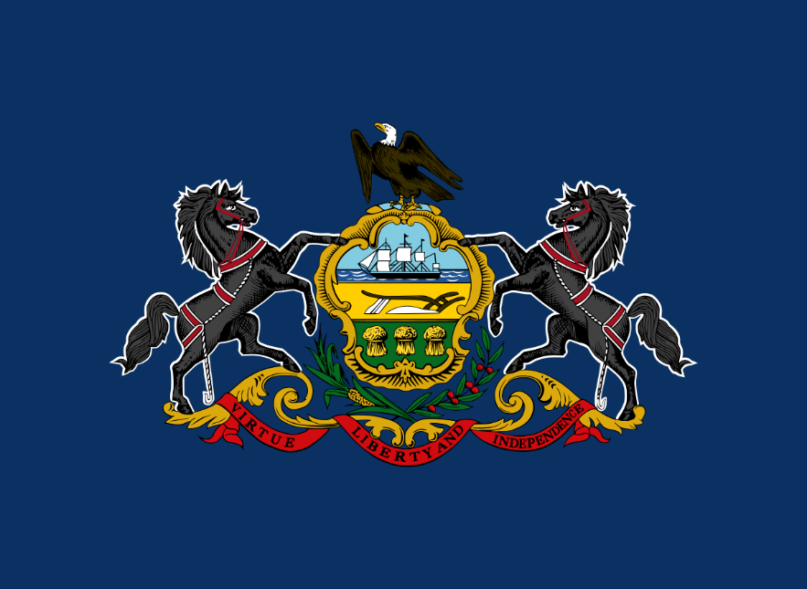

Pennsylvania
"Pennsylvania is a state in the northeastern United States, bordered by New York, New Jersey, Delaware, Maryland, West Virginia, Ohio, and Lake Erie. It is the 33rd largest state by area and the 5th most populous state. It has 67 counties and its capital is Harrisburg. Its largest city is Philadelphia, which was also the first capital of the United States. It is known as the “Keystone State” because of its central role in the formation of the country, as well as the “Quaker State” because of its founder, William Penn, who was a Quaker."
Pennsylvania is a state in the northeastern United States, bordered by New York, New Jersey, Delaware, Maryland, West Virginia, Ohio, and Lake Erie. It is the 33rd largest state by area and the 5th most populous state. It has 67 counties and its capital is Harrisburg. Its largest city is Philadelphia, which was also the first capital of the United States. It is known as the “Keystone State” because of its central role in the formation of the country, as well as the “Quaker State” because of its founder, William Penn, who was a Quaker.
Pennsylvania has a long and rich history, dating back to the Native American tribes that inhabited the region, such as the Lenape, the Susquehannock, the Iroquois, and others. It was explored and colonized by the Dutch, the Swedish, and the English, who established trading posts and settlements along the Delaware River and Bay. It was part of the Dutch colony of New Netherland, the Swedish colony of New Sweden, and the English colony of Pennsylvania, until it declared its independence in 1776. It was the site of many important events and battles during the American Revolution, such as the First and Second Continental Congresses, the Declaration of Independence, the Liberty Bell, the Battle of Brandywine, the Battle of Germantown, the Valley Forge, and the Battle of Monmouth. It was the second state to ratify the U.S. Constitution in 1787. It was also the site of the Constitutional Convention in 1787, where the Founding Fathers drafted and signed the Constitution. It was the first state to abolish slavery in 1780.
Pennsylvania has a diverse and dynamic economy, based on agriculture, manufacturing, mining, energy, tourism, and services. It is one of the leading producers of dairy, poultry, eggs, mushrooms, apples, grapes, and other crops in the country. It also has a strong industrial sector, with major industries such as steel, iron, coal, oil, natural gas, chemicals, plastics, textiles, and electronics. It is home to some of the largest and most influential corporations in the world, such as Comcast, Heinz, Hershey, PPG, U.S. Steel, and Vanguard. It attracts millions of visitors every year, who enjoy its natural beauty, historical landmarks, cultural attractions, and recreational activities.
Pennsylvania has a vibrant and diverse culture, influenced by its Native American, European, African, and Asian heritage. It has a variety of festivals, events, and traditions, such as the Groundhog Day, the Mummers Parade, the Pennsylvania Farm Show, the Philadelphia Flower Show, and the Oktoberfest. It has a rich musical and artistic scene, with genres such as classical, jazz, blues, rock, and hip hop, and artists such as Stephen Foster, Marian Anderson, Billie Holiday, John Coltrane, Andy Warhol, and Taylor Swift. It has a distinctive cuisine, featuring dishes such as cheesesteak, hoagie, pretzel, pierogi, scrapple, and shoofly pie. It has a proud sports legacy, with teams such as the Philadelphia Eagles, the Pittsburgh Steelers, the Philadelphia 76ers, the Pittsburgh Penguins, the Philadelphia Phillies, and the Pittsburgh Pirates, and athletes such as Joe Montana, Joe Namath, Wilt Chamberlain, Mario Lemieux, and Arnold Palmer.